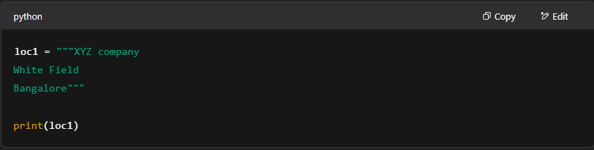
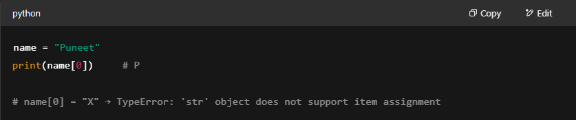
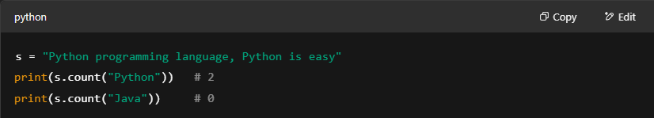
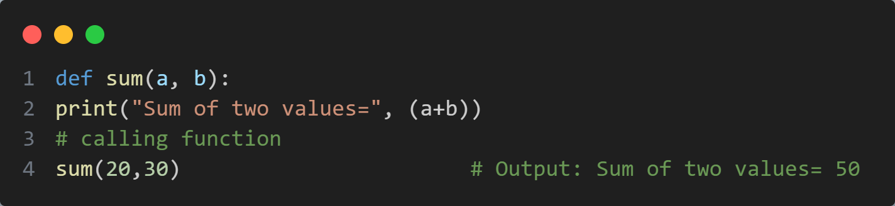
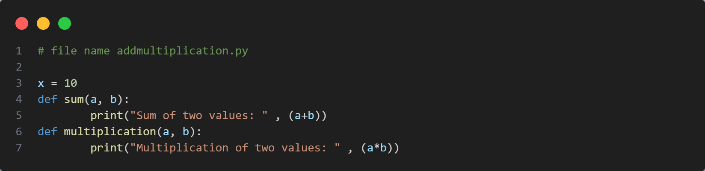

Introduction to python
What is Python?
Python is a popular programming language. It was created by Guido van Rossum, and released in 1991.
It is used for:
- web development (server-side),
- software development
- mathematics
- system scripting
Summary :
- General-purpose, high-level, interpreted language.
- Supports both object-oriented and functional programming.
- Created by Guido van Rossum in 1991.
Python Versions
- Python 1.0 – 1994
- Python 2.0 – 2000
- Python 3.0 – 2008 (not backward compatible with 2.x)
Features of Python
- Simple & easy to read/write
- Open Source & Portable
- Platform Independent
- Large Library Support (e.g., NumPy, Pandas)
- Database connectivity (MySQL, Oracle)
- Used in AI, ML, IoT, Web, Automation
Applications of Python
- Web apps: (e.g., Django, Flask)
- GUI apps: (e.g., Tkinter, PyQt)
- Data Science: (e.g., NumPy, Pandas)
- AI/ML: (e.g., Scikit-learn, TensorFlow)
- Console Apps, Business Apps, CAD, Image Processing
Python Flavors
- cpython: Standard Python
- jython: Python for Java
- ironpython: Python for .NET
- anaconda: Data Science-based distribution
- pypy: Fast execution using JIT compiler
Keywords in Python
Reserved words like:if,else,for,True,False, None,etc.
First Python Code :
Python Execution Flow
- Code is written in .py
- Compiler converts it to bytecode (__pycache__)
- Python Virtual Machine (PVM) executes bytecode using an interpreter
✅ Compile Manually:
Interactive Mode
Type python in terminal to enter interactive mode
Python IDLE
- Built-in editor with both script and interactive mode.
- Run Python code easily from here.
Data Types in Python
Python has several built-in data types that can be used to classify and categorize data items. These data types determine what operations can be performed on a particular piece of data.
Python supports various built-in and user-defined data types.
Built-in Data Types
Numeric Types:
- int: Represents whole numbers
(e.g., 1, 2, 3, -1, 0).
- float:Represents real numbers with decimal points
(e.g., 1.2, 3.14, -0.5).
- complex:Represents complex numbers with a real and imaginary part
(e.g., 1 + 2j).
Sequence Types:
- str:Represents text data
(e.g., "hello", "world").
- list: An ordered, mutable sequence of items
(e.g., \[1, 2, "apple"]).
- tuple:An ordered, immutable sequence of items
(e.g., (1, 2, "apple")).
- range:Represents a sequence of numbers.
Mapping Type:
-
dict:Represents a collection of key-value pairs
(e.g., {"name": "John", "age": 30}).
Set Types:
- set:An unordered collection of unique items
(e.g., {1, 2, 3}).
- frozenset:An immutable set.
Boolean Type:
-
bool: Represents either True or False.
Binary Types:
- bytes: Represents a sequence of single bytes.
- bytearray: A mutable sequence of bytes.
- memoryview: Provides a view of memory without copying.
Python also provides the ability to cast data types from one to another, such as converting an integer to a float. The type() function can be used to determine the data type of a variable. Additionally, Python has specialized data types such as dates, times, and arrays.
User-defined Data Types
Created using classes, arrays, and modules.
Type Checking:
Use type() function to check the type of a variable.
Operators in Python
Operators are special symbols in Python that carry out specific operations on values and variables, referred to as operands. These operators are essential for performing various tasks, including arithmetic calculations, comparisons, logical evaluations, and bitwise manipulations.
Types of Operators
Arithmetic Operators:
The operators which are used to perform arithmetic operations like addition, subtraction, division etc.
- ( + ) Addition
- ( - ) Subtraction
- ( * ) Multiplication
- ( / ) Division
- ( % ) Modulo - remainder of a division
- ( // ) Floor division - integer part of the division
- ( ** ) Exponentiation
Assignment Operators:
The operators which are used for assigning values to variables. "=" is the assignment operator.
- ( = ) assign
- ( += ) add and assign
- ( -= ) subtract and assign
- ( *= ) multiply and assign
- ( /= ) divide and assign
- ( %= ) modulo and assign
- ( //=) floor divide and assign
- ( **=) exponentiate and assign
Comparison Operators:
These compare values.
- ( == ) equal
- ( != ) not equal
- ( > ) greater than
- ( < ) less than
- ( >= ) greater than or equal to
- ( <= ) less than or equal to
Logical Operators:
These perform logical operations.
- ( and ) logical AND
- ( or ) logical OR
- ( not ) logical NOT
Bitwise Operators:
These operate on individual bits.
- ( & ) bitwise AND
- ( | ) bitwise OR
- ( ^ ) bitwise XOR
- ( ~ ) bitwise NOT
- ( << ) left shift
- ( >> ) right shift
Identity Operators:
These check if two operands refer to the same object in memory.
- ( is ) is the same object
- ( is not ) is not the same object
Membership Operators:
These test if a sequence is present in an object.
- ( in ) is present
- ( not in ) is not present
Input and Output in Python
Methods :
- Convert from String to type into other types
- eval() function
- Command-line arguments
- IndexError
- Len() function
Some important codes
1. Input Method in Python
2. Checking return type of input() method in python
3. Checking return type of input() method in python
4. Converting string type to int() in Python
5. Converting string type to float() in Python
6. Taking int value at run time in Python
7. Taking int value and print their sum in Python
Control flow Statement
Types Of Control Flow Statement
- Sequential flow
- Conditional flow
- Looping flow
Control flow Statement Graph
SEQUENTIAL STATEMENTS IN PYTHON:
In this type of execution flow, the statements are executed one after the other sequentially. By using sequential statements, we can develop simple programs.sequential statements are executed line by line.
Sequential statements (demo1.py)
CONDITIONAL STATEMENTS IN PYTHON
Conditional: Statements are executed based on the condition. As shown above in the flow graph, if the condition is true then one set of statements are executed, and if false then the other set. Conditional statements are used much in complex programs.
There are three types of conditional statements in python. They are as follows:
- if statement
- if-else statement
- if elif else statement
if statement in python:
The if statement contains an expression/condition. As per the syntax colon (:) is mandatory otherwise it throws a syntax error. The condition gives the result as a bool type, either True or False. If the condition result is True, then if block statements will be executed. If the condition result is False, then if block statements won‟t execute.
Example :-
if-else statement in python:
The if statement contains an expression/condition.The condition gives the result as bool type, which means either True or False. If the condition result is True, then if block statements will be executed. If the condition result is False, then else block statements will be executed.
Example :-
if...elif...else statement:
The if statement contains an expression/condition.The condition gives the result as bool type, which means either True or False. The conditions are evaluated in the order written. If one condition becomes True then the set of statements associated with that particular condition are executed and the execution comes out without checking other conditions.
Example :-
LOOPING (Iterations) Statement in Python
If we want to execute a group of statements multiple times, then we should go for a looping kind of execution. There are two types of loops available in python.
while loop
for loop
For Loops
For loops are typically used to iterate over a sequence (such as a list, tuple, string, or range) or other iterable objects. The loop executes once for each item in the sequence.
Example :
While Loops
While loops repeatedly execute a block of code as long as a condition is true.
Example :
Loop Control Statements
break:Terminates the loop prematurely.
continue:Skips the rest of the code inside the loop for the current iteration and moves to the next iteration.
pass: Does nothing, often used as a placeholder.
Example :
Nested Loops
Loops can be nested inside other loops. The inner loop executes completely for each iteration of the outer loop.
Example :
Looping with else
Python for and while loops can have an else clause. The else block executes when the loop finishes normally (i.e., not terminated by a break statement).
Example :
Strings in Python
Introduction to Strings in Python :-
A string is a sequence of characters enclosed in single ('), double ("), or triple (''' or """) quotes.Triple quotes are used for multi-line strings.
String Creation & Examples
Strings can include single or double quotes within them.
An empty string is created using "".
Accessing String Characters
Characters in strings can be accessed using:
indexing:
- Positive (left to right, starting at 0)
- Negative (right to left, starting at -1)
slicing : Extracting a substring using string[start:end:step].
String Immutability
Strings in Python are immutable (cannot be modified after creation).
String Operations
Concatenation (+) : Combines strings.
Repetition (*) : Repeats a string multiple times.
Length (len()) : Returns number of characters in the string.
Membership Operators
in and not in are used to check if a substring exists within a string.
Comparison Operators
Strings can be compared using ==, !=, <, >, etc., based on dictionary order.
Whitespace Handling
strip(), lstrip(), rstrip() remove spaces from ends of a string.
Substring Operations
find() / index() –Find substring (returns index or error).
rfind() / rindex() – Same as above, but search from end.
count() – Counts number of occurrences.
replace() – Replaces part of a string with another (creates a new string).
Splitting and Joining Strings
split() – Splits a string into a list using a separator.
join() – Joins a list/tuple of strings into one string using a separator.
Changing String Case
upper(), lower(), swapcase(), title(), capitalize() – Modify case of characters.
String Formatting
format() with {} or numbered/named placeholders is used to insert variables into strings.
Character Data Type
No separate char type in Python; a single character is treated as a string of length 1.
| Some Importan Programs |
1. Creating and Printing Strings
2. Multi-line Strings

3. Quotes Inside Strings
4. Empty String
5. Accessing Characters (Indexing)
6. Loop Through String
7. Slicing Strings
8. Immutability of Strings

9. String Concatenation and Repetition
10. Length of String
11. Membership Operators
12. Comparing Strings
13. Removing Spaces
14. Finding Substrings
15. Counting Substrings

16. Replacing Strings
17. Splitting Strings
18. Joining Strings
19. Changing Case
20. Formatting Strings
21. Character Data Type
functions in Pythoon
A function is one that contains a group of statements or a block of code to perform a certain task. The advantages of using functions are:
Maintaining the code is an easy way.
Code re-usability.
Example : print() is a predefined function in python that prints output on the console.
Types of functions in python:
There are many categories based on which we can categorize the functions. This categorization is based on who created it.
- Pre-defined or built-in functions
- User-defined functions
Predefined or built-in functions:
The functions which come installed along with python software are called predefined or built-in functions. We have covered some inbuilt functions in examples of earlier chapters. Some of them are stroid(), type(), input(), print() etc.
User-defined functions:
The functions which are defined by the developer as per the requirement are called user-defined functions. In this chapter, we shall concentrate on these kinds of functions that are user-defined.
How to Create and call a function in Python?
From creating a function to using it, these are the two things that are done.
- Defining function
- Calling function
Defining a function in Python :-
In the function-related terminologies above, it was clearly explained what is what and how are they used. All the points together define the function. To summarize the definition contains – def keyword, name for the function, parentheses, parameters(optional), colon (:), body, return(optional).
Syntax to define a function in Python :-
Example:Define a function that has no parameters
def display():
print("welcome to function")
Calling a function in Python:
After defining a function, we need to call to execute the function. While calling the function, we have to call with the same name of the function which we used while defining it, otherwise we will get an error.
Example: Define a function and call it
def display():
print("welcome to function")
display()
display()
display()
Parameters/Arguments in function :-
Based on the parameters, functions can be categorized into two types. They are:
- Function without parameters
- Function with parameters
Function without Parameters in Python :-
A function that has no parameters in the function definition is called a function without parameters. The syntax is given below.
def name_of_the_function();
//body of the function to perform
operations
Example :- Function performing addition operation

Example :- Check a number is even or odd by using a function.
Function without Parameters in Python :-
The return statement is included in the function body, and it returns some results after doing the operations. Some point about the return statement
Syntax ;-
def name_of_function(par1,par2,..);
//body of function to perform
operations
return result
Example :- Define a function that can return multiple values
Output :-
sum of a and b: 15
subtraction of a and b: 5
How to Return multiple values from a function in Python?
Syntax :-
Modules and Packages in Python
In python a module means a saved python file. This file can contain a group of classes, methods, functions and variables. Every file with .py or .python extension is called a python file, in turn a module.
Module :-
Make a python file (.py). Example :-addmultiplication.py
Now addmultiplication.py file is a module. addmultiplication.py module contains one variable and two functions.

If we want to use other members(variable, function, etc) of a module in your program, then you should import that module by using the import keyword. After importing you can access members by using the name of that module.
This imports the entire module, making its functions, classes, and variables accessible using the module name as a namespace. For example:
Importing Specific Items :-
You can import specific functions, classes, or variables from a module using the from keyword:
This imports only the specified items, allowing you to use them directly without the module name.
For example:
Importing with an Alias:
You can use the as keyword to give an imported module or item a different name:
This can be useful for shortening long module names or avoiding name conflicts.
For example:
Importing All Items:
You can import all items from a module using the * wildcard:
Rough Notebook